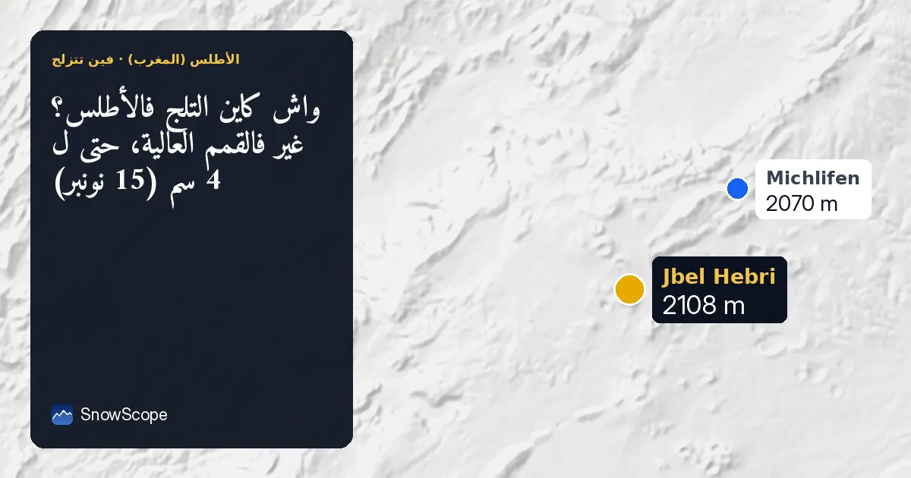

واش كاين التلج فالأطلس؟ غير فالقمم العالية، حتى ل 4 سم (15 نونبر)
واش كاين التلج فالأطلس اليوم؟ ماكاينش التلج فالبيستات ديال الأطلس اليوم. التلج مخزون غير فالقمم العالية: تقريبا 20 كم² ديال الأرض، حتى ل 4 سم فالعمق. كل رقم هنا تقدير فيه شوية ديال الشك؛ الاتجاه فشي أيام غالبا مضمون كثر من قيمة وحدة.
شوف توقعات التلج مباشرة ديال Jbel Hebri فالتطبيق ديال SnowScopeالعلو ديال التلج، التنبيهات والخريطة 3D، فابور.
عادي، بكري ولا متأخر؟
واش هادشي ماشي عادي؟ ف 46 ديال الشتوات اللي فاتو، العلو العادي ديال التلج فهاد التاريخ على 2028 م قريب من Jbel Hebri كان 0 سم: الخزان ديال التلج فالأطلس عادة كيتعمر من بعد، والبداية بلا تلج عادية.
| المحطة | العلو ديال التلج | تلج جديد، 72 س | جاي، الأيام الجاية | الفوق |
|---|---|---|---|---|
| Jbel Hebri | 0 سم | 0 سم | 0 سم | 2108 م |
| Michlifen | 0 سم | 0 سم | 0 سم | 2070 م |
| Oukaïmeden | 0 سم | 0 سم | 0 سم | 3258 م |

شحال ديال التلج كاين
Jbel Hebri: البيستات ماخازنينش التلج. Michlifen: حتى تلج مخزون فالبيستات. Oukaïmeden: البيستات ماخازنينش التلج.
المساحة اللي فيها التلج دازت من 30 كم² نهار 13 نونبر ل 20 كم² اليوم، والتوقعات ديالنا كتعطي 20 كم² نهار 18 نونبر: هادي هي الأرض اللي خازنة الما على شكل تلج.
التلج اللي مازال جاي
حتى ل 18 نونبر التوقعات ماكتزيدش تلج مهم فالمحطات، داكشي علاش الخزان ديال التلج مغاديش يكبر.
العلو هو اللي كيقرر شكون ياخد التلج فالأطلس: Oukaïmeden كتوصل ل 3258 م، فوق بزاف من Jbel Hebri (2108 م) و Michlifen (2070 م)، اللي خاصهم عواصف باردة كثر باش يبيضو.
التوقعات ديال شي أيام يمكن تتبدل: عاود شوف الخريطة نهار قبل ما تسافر.
فين كيبقى التلج، فين كيدوب
نهار 18 نونبر علو الجليد ف Jbel Hebri كيطلع ل 4870 م حتى ل 4950 م، فوق القمة ديال المحطة (2108 م): الشتا يقدر يطيح شتا ولا تلج مبلول، والشتا على التلج كتزرب الذوبان.
نصايح للي كيتزلجو
- التلج فالخريطة ماكيعنيش بلي المحطة محلولة: شوف التيليسييج والتواريخ فالموقع ديال المحطة.
- التلج ديال بداية الموسم رقيق. بقى فالبيستات المحلولة والمدكوكة: الحجر والربيع يمكن يكونو تحت نيشان.
- التوقعات ديال شي أيام يمكن تتبدل: عاود شوف الخريطة نهار قبل ما تسافر.
- فعّل تنبيه ديال التلج الطري فالتطبيق ديال SnowScope باش تعرف إمتى Jbel Hebri يجيها تلج جديد.
على هاد الأرقام
العلو ديال التلج فالمحطات هو أكثر تلج فالجهة الفوقانية حسب الموديل ديال التلج ديال SnowScope (تقريبا 1 كم، الحساب ديال 15 نونبر)؛ هادو تقديرات لمنطقة، ماشي قياس فنقطة وحدة. الأرقام ديال محطات القياس مقاسة فالتاريخ المكتوب. التوقعات يمكن تتبدل. ديما شوف النشرة الرسمية ديال الانهيارات قبل ما تخرج من البيست.
كيفاش تستاشهد بهاد المقال
للبحث، التعليم ولا الصحافة: الأرقام والرسومات تقدر تعاود تخدم بيهم بحرية تحت CC BY 4.0 مع هاد الاستشهاد.
SnowScope (2026), واش كاين التلج فالأطلس؟ غير فالقمم العالية، حتى ل 4 سم (15 نونبر), https://snowscope.app/blog/ar/2026/11/atlas-morocco-atlas-snow-check-15-november-2026.html, تشاف ف 2026-11-15
SnowScope (Atlas Labs). (2026, November 15). واش كاين التلج فالأطلس؟ غير فالقمم العالية، حتى ل 4 سم (15 نونبر). SnowScope snow reports. https://snowscope.app/blog/ar/2026/11/atlas-morocco-atlas-snow-check-15-november-2026.html
BibTeX
@misc{snowscope2026atlasmoroccoatlassnowche,
author = {{SnowScope (Atlas Labs)}},
title = {واش كاين التلج فالأطلس؟ غير فالقمم العالية، حتى ل 4 سم (15 نونبر)},
year = {2026},
month = nov,
howpublished = {\url{https://snowscope.app/blog/ar/2026/11/atlas-morocco-atlas-snow-check-15-november-2026.html}},
note = {Published 2026-11-15 20:24 UTC; accessed 2026-11-15}
}· CC BY 4.0 · الطريقة، الداتا والأدوات →
Jbel Hebri: التلج والحرارة حسب العلو، هاد الشتا مقارنة مع اللي فاتت (الأدوات) →
تابع Jbel Hebri
فابور: ميساج ملي يجي التلج، والتوقعات كل صباح.
تقارير أخرى ديال التلج

تقريبا 65 مم فوق Toubkal حتى ل 12 نونبر، ولكن علو 0 °C كيبقى قريب من 4,000 م: الشتا ف Oukaïmeden وفالوديان، والتلج غير فالفوق.

فرص التلج ف دجنبر من 46 شتوة وأثمنة النهار اللي تأكدنا منهم: Ski Cooper 49 $، Les 3 Vallées 75.70 €، Oukaïmeden بلا تعريفة رسمية. فين كتخدم نهار تزحلق رخيص ف دجنبر.